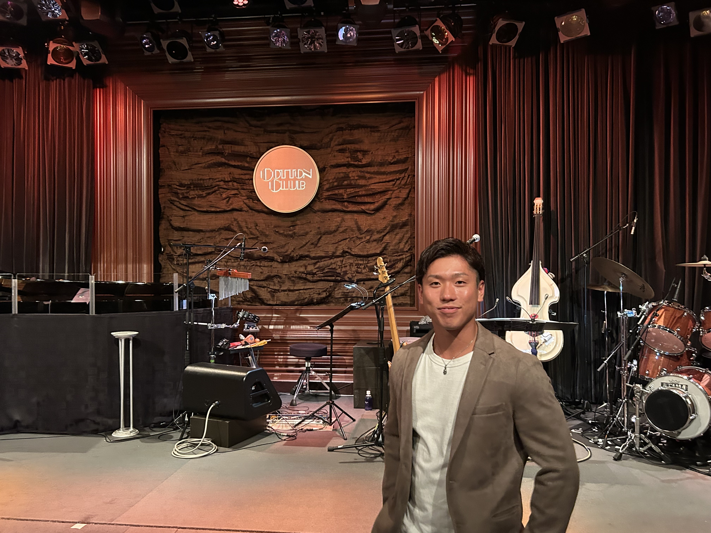

Job Library
職種一覧
全部を見る必要はありません。気になる領域を選ぶか、キーワードで探してください。
どれから見る？
迷ったら、まず近いものを1つ選んでください。該当しない場合は検索できます。
Interview
面接対策
面接前に、話す内容と伝え方を整理するためのワークです。
Profile
自己紹介

Career Consultant
菊池 佑威
Message
後悔しない選択を、
一緒に作る。
人生は一度きり。だからこそ、なんとなくの転職では終わらせない。
職種の名前だけで判断せず、仕事内容・働き方・向き不向きまで一緒に整理します。 求職者さんが自分の言葉で納得して次の一歩を選べるように、最後まで伴走します。
大切にしていること
一人ひとりが「これで行く」と思える選択をすること。
My Story
何かを変えたい人の背中を押したい。
青森で育ち、野球に打ち込んできました。高校では100人を超える部員を率いるキャプテンを経験し、目標に向かって本気で積み重ねる大切さを学びました。
大学では全国レベルの壁、ケガ、コロナを経験。社会人になってからも大きな転機があり、「人生は一回きり」という想いが今の仕事の原点になっています。
- 生年月日
- 1999.7.8
- 出身
- 青森県
- 学歴
- 八戸工大一高校 → 國學院大學 体育学部
- 前職
- 土木業
- 趣味
- 神社巡り / 筋トレ